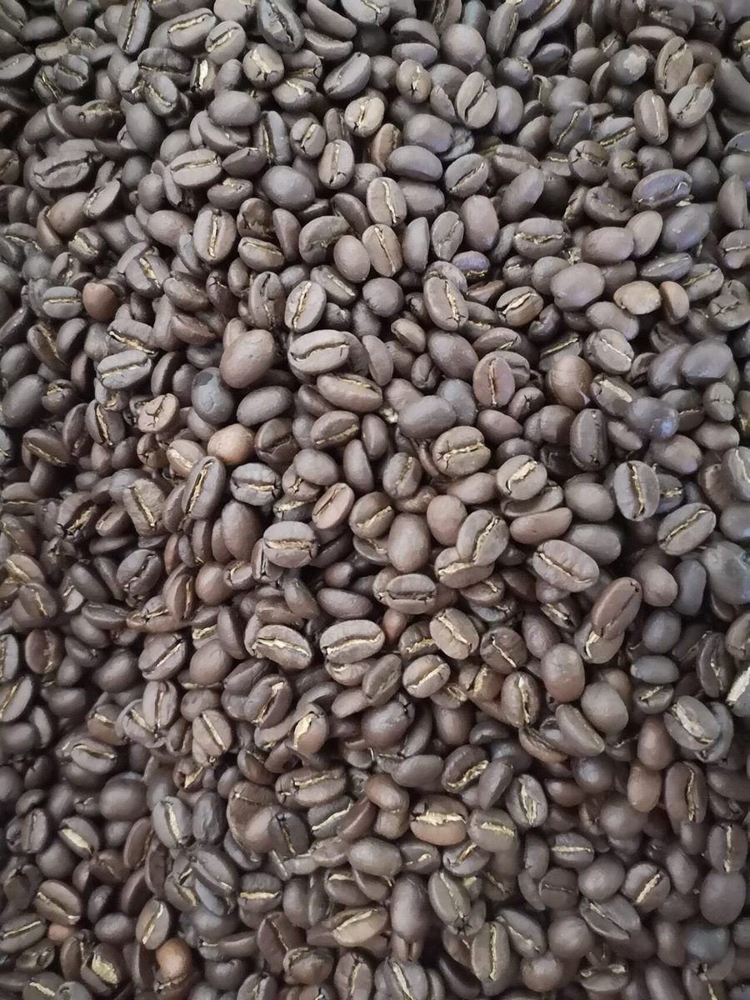

メニュー
メニュー
メニューと価格は準備中です。確認でき次第、こちらに掲載します。
| メニュー | 準備中 |
|---|---|
| 価格 | 準備中 |
| ご予約 | 準備中 |
空いている台座(掲載予定)
No.09題: 準備中説明: 準備中
No.10題: 準備中説明: 準備中
No.11題: 準備中説明: 準備中
下の写真は雰囲気を伝えるためのフリー素材で、お店で提供しているものではありません。提供メニューを示すものでもありません。



メニュー
メニューと価格は準備中です。確認でき次第、こちらに掲載します。
| メニュー | 準備中 |
|---|---|
| 価格 | 準備中 |
| ご予約 | 準備中 |
下の写真は雰囲気を伝えるためのフリー素材で、お店で提供しているものではありません。提供メニューを示すものでもありません。
